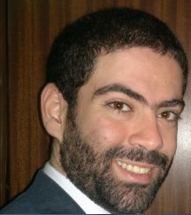

Programming language designer. Creator of the Ring programming language, Programming Without Coding Technology (PWCT), and Supernova. Researcher specializing in visual programming, compilers, virtual machines, algorithms, and machine learning.

Mahmoud Samir Fayed (born December 29, 1986) is a computer programmer and researcher who began learning programming at the age of ten in 1997, under the supervision of his father. Starting with the Clipper language under MS-DOS, he went on to dedicate his career to making programming more accessible through innovative tools and languages.
In 2005, he began developing PWCT (Programming Without Coding Technology), a general-purpose visual programming language that enables application development through graphical interfaces. This was followed by Supernova in 2009 — a domain-specific language supporting both Arabic and English keywords — and the Ring programming language in 2013, a multi-paradigm language whose compiler and VM were built entirely using PWCT.
His research spans visual programming languages, compiler design, virtual machines, algorithms, and machine learning.
A portfolio of programming languages and tools designed to make software development more accessible and productive.
Peer-reviewed contributions to visual programming, language design, and machine learning.
Find me across the web.